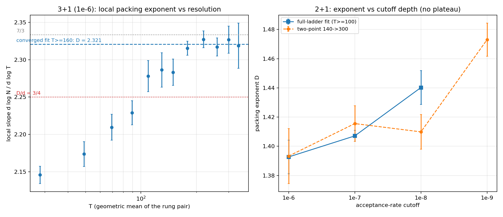
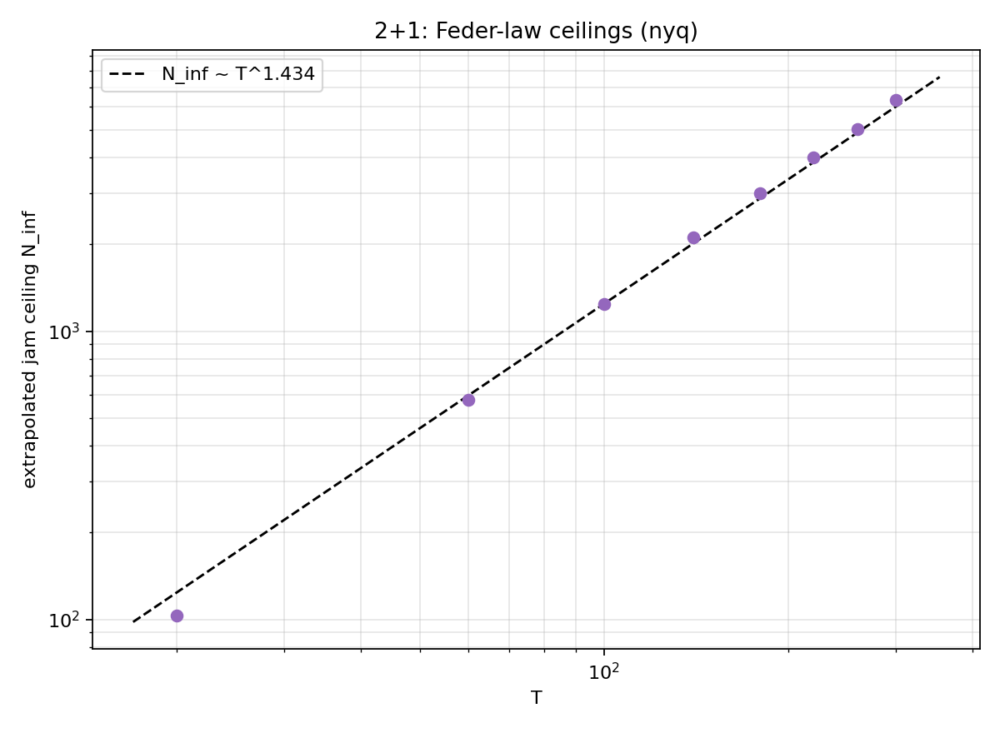

CONVERGE: the 3+1 exponent converges at 2.321 — D/d = 3/4 is dead; the 2+1 exponent still refuses a limit
converge3d_e6 (sparse engine, T = 200–360 × 5
seeds, 1e-6) + converge2d_e8 / converge2d_e9
(the pack2d ladder at 1e-8, 5 seeds; T ∈ {140,300} × 3
seeds at 1e-9), stitched with the PACK e6/e7 stores · campaign
code
664cb68
· chart
3de1b48
The convergence campaign pair: extend 3+1 in resolution (the sparse
engine sails past the dense grid's VRAM ceiling — T = 360 ran
in <4 GB) and 2+1 in cutoff depth, to pin down where each headline
exponent actually lands.

Left: 3+1 local slope vs T — converged from T ≈ 160.
Right: 2+1 exponent vs cutoff depth — still climbing at 1e-9.
3+1: D = 2.321 ± 0.001 (stat), converged.
The local slope rises from 2.15 at the ladder bottom and sits flat
across five consecutive rungs from T = 160 to 360 (2.316, 2.327,
2.318, 2.328, 2.319). The rise seen on shorter ladders was
low-T curvature, not an unconverged exponent.
D/d = 3/4 is ruled out (2.25 sits ~9σ below
the plateau) — and the plateau lands close to, but below,
7/3 ≈ 2.333. With the known +0.016/decade cutoff shift, the
jamming-limit value plausibly brushes 7/3; that is now the sharp
open question.
2+1: no limit yet. Full-ladder fits give 1.393
→ 1.407 → 1.440 across 1e-6/1e-7/1e-8 and the 1e-9
two-point anchor reads 1.473 ± 0.011 — the drift is
not decelerating through four decades. A naive
exponent-vs-log-cutoff extrapolation has nothing to converge on;
the jamming-limit 2+1 exponent needs the approach law fit directly
to the stored kinetic curves (a Feder-law analog) rather than
deeper brute force.
Prefactor growth at T = 300 decelerates mildly: +24%, +14%, +12%
per decade across the four rungs.
Bookkeeping: 25/25 + 40/40 + 6/6 jobs. One rented box (vast-2) died
mid-campaign; its three collected jobs survived, its five strays were
re-dispatched to the remaining 4090s from the resumable store, and
the whole affair cost ~20 minutes of wall-clock. The 1e-6 sparse
ladder is cheap — the T = 360 tier ran ~15 min/job on a 4090
— so appending T = 400+ later is a small job whenever we want a
longer plateau.
Feder-law extrapolation: the 2+1 jamming-limit exponent is 1.434 ± 0.021
Kinetic curves of converge2d_e8 + converge2d_e9
(46 runs), fitted with analysis/analyze_approach_law.py
· analysis code
654a5d5
The morning's verdict was that brute-force depth has no limit in
reach; this is the other road. Each run's N-vs-attempts tail is fitted
with Feder's approach law N(t) = N∞ − c·t−p:
the runs whose tails genuinely constrain p (interior optimum —
the small-T runs, which sit near true jamming) vote on a shared
p = 0.120 (deff ≈ 8.3), and every curve is then
refitted with p fixed to extrapolate its jam ceiling.

Extrapolated ceilings N∞(T): a clean power law with
D∞ = 1.434 ± 0.021.
D∞(2+1) = 1.434 ± 0.021 (stat),
and the p systematic cancels in the ladder ratio: forcing p to
either end of the interior-fit IQR (0.105–0.165) moves
D∞ by < 0.001. The ceilings sit ~26% above the
deepest (1e-9) measured N at T = 300.
The cutoff ladder read 1.393 → 1.407 → 1.440 across
e6–e8; the limit value 1.434 says the e8 rung was already
exponent-converged and the 1e-9 two-point 1.473 was small-sample
noise. D/d = 0.717 in 2+1 vs 0.774 in 3+1 — the ratio is
not dimension-universal.
3+1 cannot be extrapolated yet: every 3+1 curve
through 1e-8 rails (no detectable curvature toward a ceiling
— consistent with the decay ladders' no-plateau verdict),
so the fitter refuses rather than fabricating ceilings. Deep
small-T 3+1 runs (T = 20–60 at 1e-9, cheap) would give the
p vote a 3+1 electorate.
Takeaway: the 2+1 exponent story closes — quote
D∞ = 1.434 ± 0.021 as the jamming-limit value,
with finite-cutoff numbers as approximations to it. The same
extrapolation in 3+1 (and whether it carries 2.321 to 7/3) is the
follow-up, pending deeper small-T curves and the running
converge3d_e7.